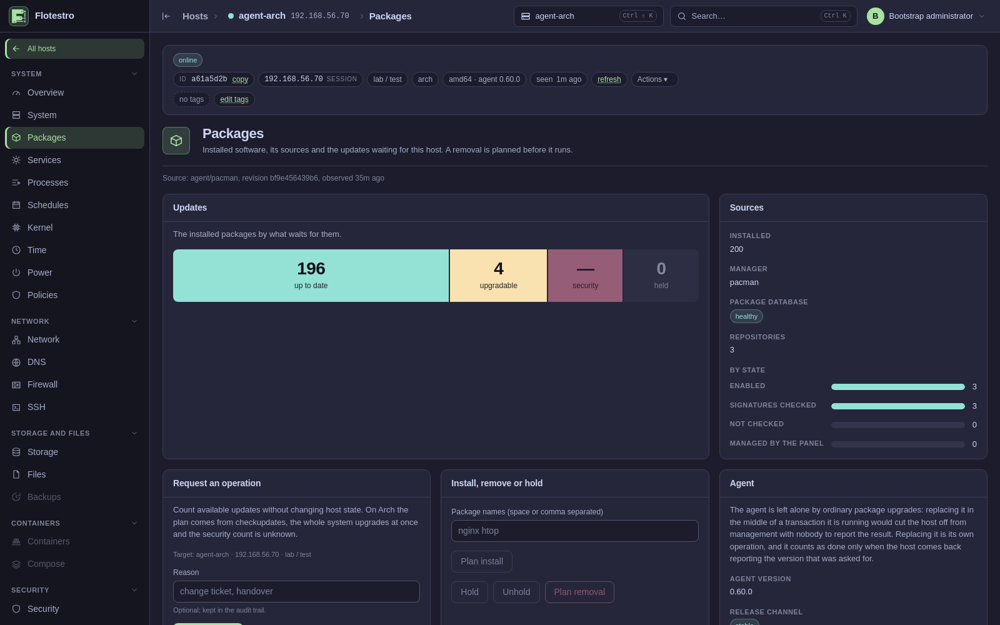
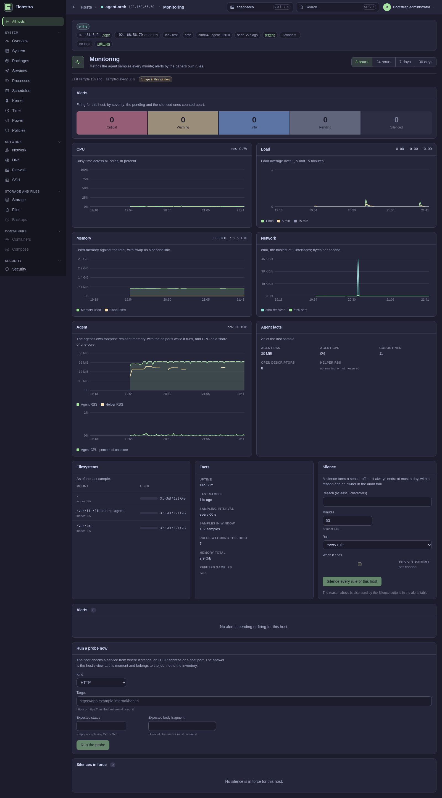
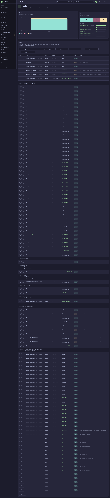

4. How a change happens
Every change in Flotestro takes the same path, whether it is one unit restarted on one host or a package upgrade across ten thousand: an operation, a plan, an approval bound to a digest, a dispatch under a lease, a result, and a verifier that reads the host afterwards to say whether the change is really there. A campaign is that path repeated under a snapshot, a canary, waves and a budget.
- The operation
- The plan and its digest
- The approval
- Dispatch and the lease
- The result and the verifier
- Campaigns
- Inventory
- The audit chain
The operation
An order names an operation, a host and a payload. The operation is a
typed contract from the registry - packages.upgrade,
unit.restart, file.ensure, disk.wipe -
and the contract decides most of what follows.
| Field | What it decides |
|---|---|
permission | The permission the caller needs in the host's scope. |
mutating | Whether it changes the host, which decides whether the helper demands a capability and which budget is claimed. |
risk | low, medium, high, critical, destructive. critical and destructive require fresh authentication; destructive also requires typing the target's name and two approvals. |
lock_class | The resource the host locks while it runs: packages, units, containers, identity, accounts, network, storage, backup, certificates, host, or none. Two changes of one class never interleave on one host. |
default_timeout_seconds | How long the host may take before the attempt is a timeout. |
max_output_bytes | The output the result may carry; 64 KiB unless the operation says otherwise. Beyond it, output_too_large. |
requires_plan | Whether the change may only run against an approved plan. |
campaign_mode | none (not allowed in bulk), same_payload, per_host_plan, or specialized for the ones with a state machine of their own - reboot, enrollment, fleet remediation. |
offline_policy | require_online, skip_if_offline, wait_until_deadline, replan_on_reconnect. |
cancel_mode | safe, checkpoint_only, impossible_after_start, local_watchdog_owned. |
rollback | automatic_local, exact_restore, compensating, best_effort, none. |
verifier and on_unverified | Which verifier reads the host after the change, and whether a change it cannot confirm is reported or rollbacked. |
resource_claims | What the operation takes on the host, shared or exclusive, and with what weight. |
An operation the registry does not know is treated as
critical, and the budgets treat it as mutating: unknown is not
harmless, so it asks for the scarcer capacity.
The plan and its digest
Nine operations may not run without a plan -
packages.upgrade, packages.install,
packages.remove, docker.container.ensure,
docker.network.ensure, docker.network.remove,
docker.volume.ensure, docker.volume.remove and
docker.compose.deploy - and many more have a planner beside
them: file.ensure plans with file.plan,
firewall.rule.ensure with firewall.plan,
network.profile.apply with network.plan,
certificate.deploy with certificate.plan,
backup.run with backup.plan.
A plan is computed on the host, because only the host knows what its package manager, its unit files and its filesystems will actually do. It is an envelope with the schema version, the planner version, the action, the host, the inventory revision it was read against, the resource revision, the preconditions, the steps, the effects it promises, the artifacts (for packages: the exact versions; for Compose: the resolved image digests), the rollback and an expiry.

How the digest is computed
Before hashing, the envelope is stripped of everything that is not the
content of the change - the description, the host identifier, the inventory
revision and the expiry - and then normalized: every collection sorted, every
null list turned into an empty one, every timestamp truncated to
the second in UTC. The result is encoded as canonical JSON to RFC 8785
(members sorted by UTF-16 code unit, no whitespace, minimal escaping) and
hashed with SHA-256. The hex form of that hash is the digest an approver
approves.
The consequence is the point of the whole design: the same change against the same state always hashes the same, on any machine, in any order of fields - and any difference at all, down to one package version, is a different digest.
What is checked before the change runs
When the task reaches the host, the host computes the plan again and compares it with the approved reference:
| Check | Refusal |
|---|---|
| The plan computed now hashes to something else | stale_plan - the state of the host moved after the plan was computed. Nothing is changed. |
| The schema or planner version differs | replan_required |
| The plan is past its expiry (24 hours by default) | plan_expired |
| The execution carries no digest at all | stale_plan; the panel's own name for a host that gave no digest to approve is plan_hash_missing |
| The steps ran but the post-state does not show every promised effect | effects_partial |
Two digests, and they are not the same thing
The plan digest binds the computed change - steps,
effects, artifacts - to its approval. The payload hash
binds the order to the job row when it is created: SHA-256 over a
domain-separated prefix, the action, the contract version and the canonical
JSON of the payload. A task whose payload does not match the one the job
was created with is refused with
payload_hash_mismatch, and the helper checks
the same binding again, per request, against the capability it was
handed.
The approval
A job that needs approval is created in awaiting_approval and
goes nowhere until it has enough. One approval is the default; a
destructive operation needs two, and the two have to be two
different people - the approvals table is keyed by the approver. In an
environment named by FLOTESTRO_PRODUCTION_ENVIRONMENTS
(prod,production by default) a change needs a second person's
approval as well.
What an approval binds to is the plan, not the intention. The approval
request may carry the payload_hash the approver had in front of
them, and the panel compares it with the job's: a mismatch is
409 payload_hash_mismatch - "the
plan changed since you reviewed it" - and the denial goes on the audit trail
with what was expected. In a production environment the person who ordered
the change cannot approve it: that is 403
self_approval, recorded with the environment and
the name of whoever created the job.
Beside the approval the panel records the actor and the authentication the
decision rested on - the session, its acr and amr,
the moment of the authentication - and the reason the approver gave. Fresh
authentication is required for every critical and
destructive operation: the session has to be younger than
FLOTESTRO_STEPUP_MAX_AGE (5m) and, if the installation set one,
at FLOTESTRO_STEPUP_ACR. With
FLOTESTRO_STEPUP_TOKENS=refuse, an API token cannot carry such
an operation at all and gets
reauthentication_required. On the step-up routes
- the CA rotation, the lifecycle of a host, the monitoring settings, the
notification channels - the reason is not optional: fewer than eight
characters is refused with
reason_required.
An approval that no longer describes what is about to run is refused
rather than stretched: approval_stale when the
campaign changed since consent was given, and
fingerprint_mismatch when the approval carried
the fingerprint of something else.
The preview a bulk order is placed from
A campaign is ordered from a preview: the panel resolves the selector,
shows who would be touched, and hands back a preview identifier with a
digest over the qualified hosts. The order carries both, and the panel
refuses it if anything has moved in between -
preview_unknown,
preview_expired (a preview lives 15 minutes),
preview_consumed,
preview_principal_mismatch,
preview_permission_mismatch,
preview_action_mismatch,
preview_selector_changed,
preview_scope_changed,
preview_targets_changed or
preview_digest_mismatch. Nobody approves a list
and then runs a different one.
Dispatch and the lease
An approved job is queued. From there the panel owns it, and the states it passes through are exactly these:
| State | Meaning |
|---|---|
planned | Created, with its payload hash and its plan reference. |
awaiting_approval | Waiting for the approvals its operation requires. |
queued | Eligible to start. wait_reason says what it is waiting for: awaiting_budget:<key> or awaiting_lock:<blocker>. |
leased | A gateway instance has taken it to deliver. |
dispatched | The envelope went down the host's stream. |
running | The host accepted it and started. |
cancel_requested | A cancel is on its way to the host. |
succeeded, failed, timed_out, canceled, expired | Terminal. Nothing leaves these. |
A job that never gets to start expires: the time to live before dispatch
is 15 minutes unless the order set one, and
planned, awaiting_approval and queued
jobs past it are marked expired. Every job also carries an
idempotency key - the order's own, or one generated - so the same order
repeated against a host returns the existing job instead of making a second
one.
The leases
Two different leases are in play, and a queue that is not moving is usually one of them.
- The session ownership lease
- 45 seconds, renewed every 15, on the instance that holds a host's
stream. Every claim raises a fencing token, and a write from an instance
whose claim was superseded is refused by the database as
session_fence_stale; the task goes back to the queue and the new owner carries on. A connected host whose owner lease ran out issession_unowned: its tasks stay queued, never marked delivered, until a session claims it again. Neither is a failure - a stream of either from one instance is an instance keeping sessions it no longer owns. - The attempt lease
- Taken when the job is leased for delivery. Until the agent
acknowledges, it is clamped to 60 seconds; once the agent accepts, it is
raised to the execution lease of that operation and renewed on every sign
of life from the host. An attempt whose lease expires with no result goes
back to
queued, and the attempt settles aslease_expired. If the real result arrives later, it settles assuperseded_by_resultrather than being thrown away.
Delivery itself is paced by FLOTESTRO_DISPATCH_RATE - 100
envelopes a second with a one-second burst, so that a queue of thousands
after an outage drains at that pace rather than starting every host at the
same moment. What the pace held back is counted in
flotestro_dispatch_throttled_total; 0 turns the
pacing off.
A reboot is the one operation whose lease loss is not treated as an
answer: a system.reboot job gets a grace period of 10 minutes
for a session with a new boot id to appear, and only then fails with
reboot_not_observed.
Cancelling
A cancel is a request to the host, not a state change in the panel. The host answers with one of four outcomes:
| Answer | What the panel does |
|---|---|
not_started | Settles the job as canceled. |
interrupted | Settles the job as canceled. |
not_interruptible | Puts the job back to running; its result will settle it. |
already_done | Nothing moves; the result in flight settles it. |
No answer within the operation's own timeout fails the job with
cancel_ack_timeout and the result status
unknown_needs_reconciliation - the panel does not claim the
change did not happen. An operation whose contract is
impossible_after_start answers a cancel with
operation_non_cancelable.
The result and the verifier
The result carries the status, the output within the operation's limit,
the effects the steps actually produced and, where there is one, the
verifier's reading of the host afterwards. The verifiers are typed like
everything else - unit_state, package_versions,
file_content, network_state,
firewall_ruleset, container_spec,
reboot, agent_version and some twenty more - and
each operation declares which one applies.
A change that ran but that the verifier could not confirm is not a
success. It settles as
applied_unverified, which names the verifier,
what was expected, what was observed, and whether a rollback happened -
because the operation's on_unverified is either
report or rollback. A network change that cut the
host off is undone by the host itself and comes back as
rolled_back; a unit that is not active after the
change is unit_unhealthy; a post-change check of
the host that failed is health_check_failed.
An agent that restarted in the middle of an operation answers
outcome_unknown: the outcome has to be read from
the host before the operation is tried again. This is the doctrine in its
least convenient form, and it is deliberate - a panel that assumed "probably
nothing happened" would be wrong exactly when it matters.
Campaigns
A campaign is the same path across many hosts, with the things a fleet needs that a single host does not: a fixed list of targets, a canary, waves, a gate, a threshold, a window and a budget.

The snapshot
The selector records what was asked for; the snapshot records what it resolved to. At creation, in the same transaction as the campaign row, every host the selector matched is written into the campaign's targets with its wave and its position. Nothing about the membership changes afterwards: a host that matches the selector an hour later is not silently added, and a host that stops matching is not silently dropped. What was approved is what runs.
The canary and the waves
Wave zero is the canary. The first canary_size targets in the
snapshot's order are wave zero - one host unless the order says otherwise -
and the rest are cut into waves of wave_size. A wave starts only
once the wave before it has fully settled, and inside a wave at most
max_concurrent hosts run at a time.
| Setting | Default | Bound |
|---|---|---|
canary_size | 1 | 0 is legal and means no canary phase; a manual gate requires a canary. |
wave_size | 10 for most operations; 50 for packages.repository.set; 10 for system.hostname.set | at most 500 |
max_concurrent | 5 for most operations; 2 for system.hostname.set | at most 200 |
failure_threshold_percent | 20 | 0-100; 0 disables it |
failure_threshold_absolute | 0 (disabled) | |
deadline | 24 hours | how long a host waiting to come back may hold a target open |
| reboot timeout | 15 minutes | between 1 minute and 2 hours |
The gate
There is no such thing as an "automatic gate": automatic progression is
simply the absence of a manual one. With manual_gate set, the
campaign stops after the canary in the state manual_gate and
waits for a person to advance it; the panel records who advanced it and when,
and the audit trail carries campaign.manual_gate. The same
endpoint family carries pause, resume,
advance and cancel.
The thresholds
After every settled host the campaign asks whether it has failed enough to stop. The absolute threshold trips when the number of failures reaches it; the percentage threshold trips when the failed share of the finished hosts reaches it. Either one pauses the campaign - it never cancels it - with the reason, the counts and the thresholds on the audit trail, so that an operator decides whether the remaining waves still make sense.
A host that ended unknown counts as a failure for that tally.
The threshold is a bound on hosts that did not reach the desired state, and a
host nobody can speak for did not, as far as anyone knows.
There is a second, separate bound for the case where the change itself
takes hosts away: connectivity_lost_absolute, which pauses the
campaign once that many hosts have lost their session while their task ran
(their targets carry lease_expired). It is
disabled unless the order sets it.
The maintenance window
A window is two absolute moments, a start and an end - not a cron
expression. It holds back the start of new hosts and never
interrupts a host already running. A host still rebooting when the window
closes carries reboot_window_closed, and the
campaign pauses with the reason
maintenance_window_closed_mid_reboot.
Recurrence is a different feature: a campaign order can be
scheduled to repeat weekly or monthly, by weekday or by day of the month, at
an hour and minute in a named IANA time zone (UTC when none is
given; anything that is not a zone name is refused with
invalid_timezone).
The budgets
A budget answers one question: does the system have the capacity to start one more operation. Every mutating operation claims the global mutation budget plus the budgets of its site, its failure domain and its gateway for the family of its lock class; a backup also claims the budget of its repository, because two backups against one repository contend whatever hosts they run from.
| Key | Scope |
|---|---|
global:mutations, global:reads | The installation as a whole. |
site:<site>:<family> | One site, one family of work. |
domain:<domain>:<family> | One failure domain. |
gateway:<gateway>:<family> | One gateway or relay. |
backend:<repository>:backup | One backup repository. |
Work is claimed in one of four classes, in priority order:
incident (never waits), interactive,
maintenance - which is what every campaign claims - and
background, the panel's own sweeps. Capacity that is free is
still not given out without limit: a claimant's fair share is the capacity
divided by the number of claimants, and a campaign is one claimant however
many hosts it holds. A claimant refused for its share is let through anyway
once it has waited past its class's promotion age - 15 seconds for
interactive, 2 minutes for maintenance, 5 minutes for background.
A refusal is capacity or fair_share, and reaches
the operator as budget_capacity or
budget_fair_share on a campaign target, and as
wait_reason: awaiting_budget:<key> on a single-host job.
Leases on a budget are two minutes and are renewed while the work runs; they
carry a fencing token, so a runner that lost its target to another one
releases nothing.
Raising a budget's capacity is a write that takes part in optimistic
concurrency: read it, and repeat the write with the ETag you read. A stale
one is refused with 412
precondition_failed. A budget still holding
running work cannot be deleted (budget_in_use),
and a capacity below 1 is refused - to stop work, pause the campaign.
Offline hosts
Each operation declares what it does when the host is not there, and a campaign may only tighten it, never loosen it:
| Policy | What happens | Typical operations |
|---|---|---|
wait_until_deadline | The target stays queued until the host reconnects, up to the campaign's deadline. | unit start/stop/restart, package hold and repair, agent upgrade, sysctl, kernel module load, docker start/stop |
replan_on_reconnect | Waits, then recomputes the host's plan on reconnect and runs only if the new plan hashes to the approved one. | plan-bound package and container changes |
skip_if_offline | The host is left out. Not a failure. | inventory.refresh, security.scan, certificate.scan, monitoring.probe.run, dns.resolve.test, time.sync.test |
require_online | Participation ends the moment the host is found offline. | system.reboot, system.shutdown, system.hostname.set, localuser.delete, disk.wipe |
The states a campaign and its targets pass through
The campaign itself: planning, planned,
awaiting_approval, canary,
manual_gate, running, pausing,
paused, canceling, and then one of the terminal
states completed, completed_with_issues,
failed, plan_failed, expired or
canceled. The verdict is simple: failures with no successes is
failed, failures beside successes is
completed_with_issues, and neither is
completed.
Each target: pending, planning,
awaiting_budget, ineligible, excluded,
queued_offline, dispatched,
awaiting_lock, running, rebooting,
verifying, and then succeeded,
no_change, failed, unknown,
skipped or canceled. A host that was never eligible
carries the reason as its code -
quarantined,
out_of_scope,
capability_missing,
inventory_stale,
conflict (another campaign is already working on
it) or excluded (an operator named it).
Retrying and undoing
A finished campaign can be retried over the hosts that failed, and that is
a new campaign with its own approval: a retry of one that is still running or
paused is refused with
campaign_not_finished, and one where nothing
failed with nothing_to_retry. A compensation -
the declared reverse operation over the hosts the original actually changed -
is refused with
compensated_campaign_not_settled,
not_reverse_operation,
nothing_to_compensate or
compensation_target_unchanged if it is not that.
Undoing is an ordered change like any other; it is never a quiet rewind.
Inventory
Inventory is what the whole panel reasons from: the units, the packages, the mounts, the interfaces, the certificates, the accounts, the sudo policy. The agent reports it; the panel judges it.
Revisions
A report carries a revision - a tag the agent computes - and may be
full (every module) or partial. The panel stores it against
(host, revision): a revision it has seen before does not create
a new row, it only moves the freshness mark, so a host that went back to an
earlier picture has that picture as its latest rather than a spurious new
one. Per module it keeps a fragment with its own revision, source,
payload and, where the module could not be read, an
unavailable_reason; a fragment's timestamp moves only when the
module's revision actually changed, so "fresh" and "unchanged" stay
distinguishable.
A host keeps at most 20 revisions, pruned in the same transaction as the new write rather than by a later sweep, and a report may not exceed 6 MiB. An oversized report is refused whole - the gateway writes nothing - rather than stored truncated: half an inventory would be a host reporting facts that are not true.
Cadences
Not everything is worth reading every quarter of an hour. The base cycle
is FLOTESTRO_INVENTORY_MINUTES (15 minutes) with ±10 %
jitter, and each module belongs to a class:
| Class | How often | Modules |
|---|---|---|
fast | Every cycle | services, containers, power and inhibitors - a unit fails or a container stops, and the operator wants it at the next cycle; the read is cheap. |
normal | Every fourth cycle | packages, network, dns, firewall, storage, security, files, certs, time - they change on their own, but slowly, and the read starts tools. |
slow | Every 6 hours, and at the start of a session | system facts and sudoers. A session start is where a reboot lands. |
static | Once a day, at the full report, or on demand | identity, accounts, kernel, schedules, ssh, backups - they change when somebody changes them, and that change usually comes from the panel and orders its own refresh. |
A module the table does not know is read as static: an unknown
module is not a cheap one. The hour of the daily full report is derived from
the host's own identifier, so a fleet's full reports are spread across the
day instead of arriving together. The panel may override the interval, the
normal multiplier and the full-report hour per session, and
inventory.refresh asks for a module now.
A verdict is only as good as the reading under it. A module read more than
twice its cadence ago is stale, and a policy or campaign that would judge a
host from it answers inventory_stale instead -
the verdict is unknown, which is not a failure.
Samples are not inventory

Resource samples follow a different path from inventory. The agent reads
the kernel counters once a minute, gives the reading an identity - the boot it
runs on and a sequence within that boot - writes it to its spool, and only
then sends it. The panel stores it, marks its quarter-hour as owing a
recomputation, and answers only after the transaction committed; the agent
deletes its copy on that answer and on no other event. A sample is identified
by its boot and sequence, never by its clock, so a clock correction changes
where a point is drawn and never which sample it is. A reading that arrives
later than FLOTESTRO_METRICS_MAX_LATENESS (24 hours) is answered
metric_sample_too_old, is not stored, and leaves
a gap with a reason rather than a line drawn through it.
The audit chain
Every order, approval, refusal and result is an event on a hash-chained
trail. An event carries the moment, the actor and what kind of actor it was,
the action, the target and its type, the outcome, the request identifier, the
session with its acr, amr and authentication time,
the approval chain, and the before and after of what changed. The target's
hostname and address are snapshotted into the event at write time, so a host
later renamed or retired keeps in the record the name it had when the thing
happened.

What the chain is
An export is newline-delimited JSON, oldest first, from
GET /api/v1/audit/export. Each line is an event plus one field,
prev_sha256: the SHA-256 of the exact bytes of the line
before it. The first line's predecessor is the SHA-256 of the empty string.
The last line is not an event at all but a trailer,
{"count": N, "sha256_chain": <hex>}, carrying the number of
events and the digest of the last event line.
Because each link covers the whole previous line, the
prev_sha256 field included, a single changed byte anywhere breaks
at least one link or the trailer. A file with no trailer is truncated by
definition, whatever it holds.
What auditverify proves
flotestro-auditverify audit-20260901.jsonl
# audit-20260901.jsonl: OK, 18422 events (1 to 18422), sha256_chain 9f2c...It reads the file and nothing else - no database, no network, no key - and recomputes the chain line by line. Exit status 0 means intact, 1 means broken, 2 means it was invoked wrongly or could not read the file. Without a file name it reads standard input, so an export can be checked as it is downloaded. The tool ships with the control-plane package, so an export can be checked where the trail was written, and it is in the admin-tools image too:
docker compose --profile tools run --rm admin-tools auditverify /backups/audit-20260901.jsonlA broken file is reported with the line that does not follow the one before
it, and with how far the file verified: the first 9120 events verified,
up to event 9120. The failures it names are the ones that can happen -
a line that follows the closing line, a line that is neither an event nor a
trailer, a count that disagrees with the lines present, a closing digest that
does not match the last event, and a file cut short.
What it does and does not prove
The chain proves that the sequence in the file is exactly the sequence
that was exported, byte for byte and in order, with nothing inserted,
removed, reordered or edited. It is a hash chain, not a signature: it says
the file was not tampered with after the export, not who produced it. That
part of the trust comes from how the file was obtained. The audit retention
is 0 - keep forever - by default, and deleting the trail is a
decision an installation makes deliberately.